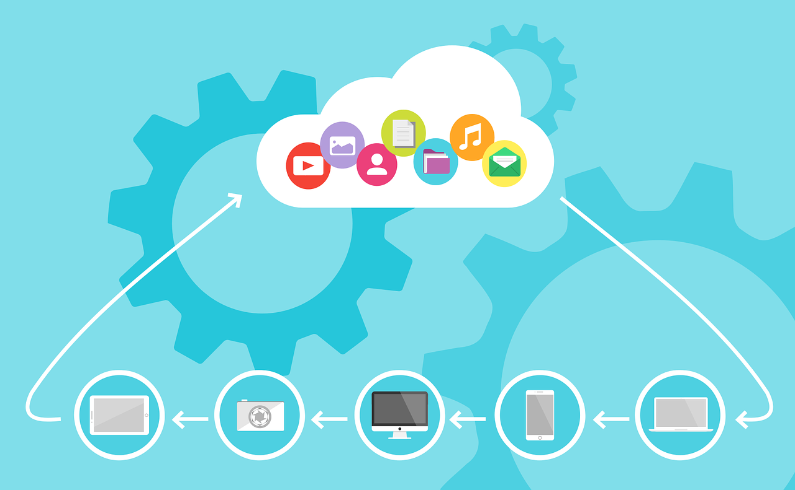

Es una tecnología que permite acceso remoto a softwares, almacenamiento de archivos y procesamiento de datos por medio de Internet siendo así, una alternativa a la ejecución en una computadora personal
o servidor local.

En el modelo de nube, no hay necesidad de instalar aplicaciones localmente en computadoras.
Las nubes y el cloud computing no son tecnologías en sí mismas. Para utilizarlas se necesitan sistemas operativos, software de virtualización y herramientas de automatización y gestión.
Los sistemas operativos configuran las redes e interfaces de usuario host; la virtualización extrae los recursos y los agrupa en las nubes; el software de automatización asigna esos recursos, y las herramientas de gestión suministran nuevos entornos.